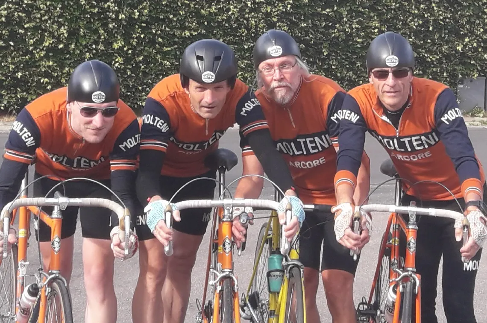
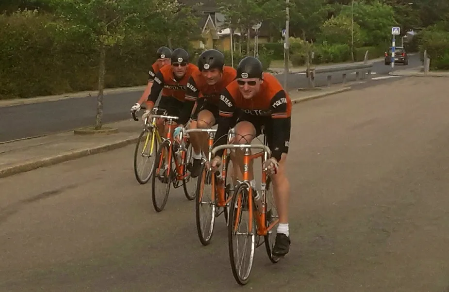
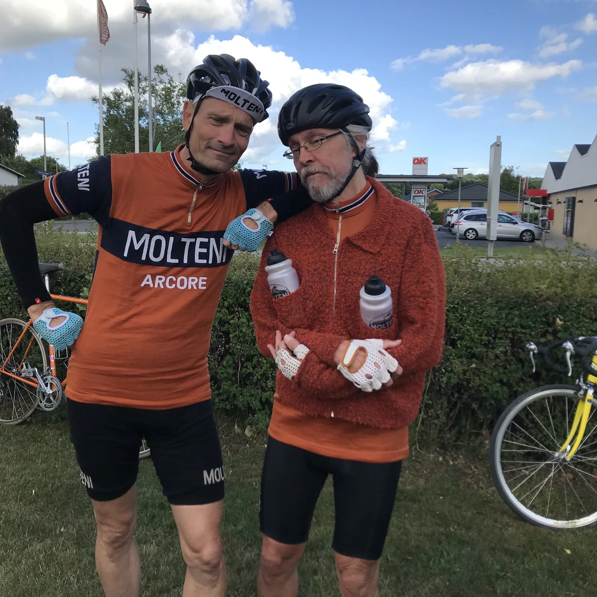

Holdløb i Hovedgård: Vind, blæst, storm, kuling og gennemtræk fra øst!

Squadra Molteni deltog i sæsonens første holdløb på en kold og blæsende efterårsdag midt på sommeren i Hovedgård i går aftes. Efter lidt indkørselsvanskeligheder var ståltoget dog smurt, og skar bogstaveligt talt gennem vinden.
Henover vinteren har holdets tekniske direktør, Grane Maaløe lavet andet end at slibe HY’en. Han har fået udviklet en prototype af et par nye aero-hjelme, der skal sikre holdet succes ved sæsonens holdløb.

Kaptajnen var tilfreds med hjelmen i modvinden, men som med så meget andet der testes i vindtunnel, er der forskel på de tal der vises på en firkantet iPhone skærm og den virkelige verden.
– Hjelmen er skide god i modvind, her skærer den simpelthen som en varm kniv i blødt smør. Men vi skal have arbejdet lidt på profilen i sidevinden. Den tager fat som et andet carbonpladehjul. Her dagen derpå har jeg stadig et voldsomt hold i nakken, udtaler kaptajn Niels Bjørnsteen.
Fire mand og én kvinde var på startlisten til gårsdagens holdløb. Desværre blev holdets stærke kort, Maria Winther, ramt af sygdom og holdet måtte derfor nøjes med fire mand: Niels Bjørnsteen, Eigil Leegaard, Kasper Sørensen og Svend Seegert.
En kold vind blæste og truede motivationen for de fire ryttere på vej mod Hovedgård:
– Hvis det begynder at regne, cykler vi hjem udtalte kaptajnen fra bagsædet af bilen. Min kvote af regnvejrsløb er opbrugt på denne side af sommerferien.
Efter 2×30 meters opvarmning på villavejene omkring Hovedgård skole var det afgang. Det var lige på og hårdt, og vi mærkede med samme fordelen ved de 12 kg. tunge stålcykler med lavprofilhjul.
– Vinden trak godt i de løse uldtrøjer, men de lave fælge og tunge stålrammer stod fast på vejen. De andre carbonhold lå jo fuldstændigt opløst på hele vejen, og troede de kørte på vifte, udtaler Kasper Sørensen.
Svend kom direkte fra Aarhus med en yderst veltrimmet motor, og trak som en jysk traktor gennem modvinden, hvor Eigil Leegaard igen havde lidt vanskeligheder med en koldstart. Han kom dog godt efter det senere.
Holdets tekniske direktør havde regnet ud, at med de nye hjelme ville omgangstiden blive omkring 27 minutter. Første omgang blev kørt på 27 minutter og 0 sekunder.
– Vinden drillede os lidt i starten, og vi skulle lige styre cyklerne, men ellers kom vi ind i et godt samarbejde, siger en stærk Svend Seegert.
Anden omgang blev kørt på 27 minutter og 0 sekunder, og her havde Eigils motor fundet lidt diesel frem fra gemmerne. Kasper var også begyndt at finde benene, og fik taget et par lange træk i modvinden, og kaptajn Niels Bjørnsteen tog et par ordentlige herreføringer i sidevinden.

På tredje omgang havde holdet allerede overhalet en lille håndfuld forankørende hold – og med dem der var kommet forbi bagfra, var der stadig plus på bundlinjen.
Der blev ikke sparet noget på sidste omgang. Samarbejdet var efterhånden perfekt, og alle gik til den og sørgede for at farten blev holdt høj i modvinden.
Kasper havde stadig lidt ekstra i tanken, og fik skudt det hele af på det sidste lange medvindsstykke ind mod mål, og med en sidste spurt mod målstegen kom ind i omgangstiden 27 minutter 0 sekunder.
– Jeg har aldrig set Kasper køre så stærkt før, men det viste sig også at han havde en siver på forhjulet, så han skulle skynde sig hjem inden den blev helt flad, fortæller Eigil Leegaard efter løbet.
Teknisk direktør Grane Maaløe er godt tilfreds med sin udregning, men indrømmer at han skal have arbejdet lidt på hjelmens sagittale profil. Hans efterfølgende udregninger viser, at det kunne være gået grueligt galt.
– Havde det ikke været for de tunge stålcykler, så var rytterne simpelthen blæst ud i marken. Jeg kan jo se, at deres nakkehvirvler i højre side har strakt sig 3.5 cm., men det er jo ikke mit problem, det må holdets fys tage sig af, siger Grane.
Officielt sluttede holdet som nummer 13 ud af 17, men kaptajnens konklusion er klar: ”Holdet kørte stærkt, men der er ingen tvivl om, at Marias fravær og Kasper’s sivende ring kostede os 8,5 minutter, som i sidste ende ville have givet os sejren med 3 sekunder, udtaler han.”
Tak til DGI og Peter Meinert for et fantastisk holdløb. Vi ses i Lund d. 22. august.
P.s. Holdets tekniske direktør præsenterede også sin nyeste opfindelse: vandbærervesten, som er blevet lavet efter mål til Svend Seegert. Kaptajnens dom: “Tilbage til tegnebrættet. Omgående!”.
